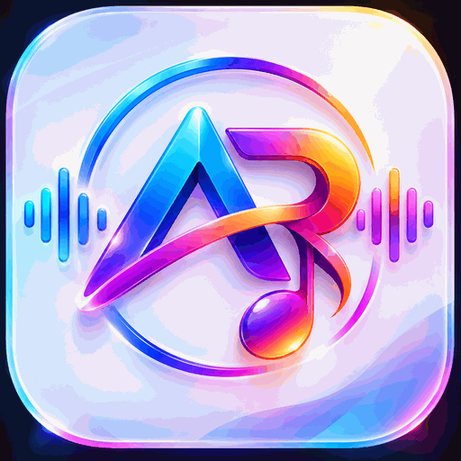

Scan Your Phone Videos (0 MB Extra Space)
Link your phone's Movies, Download, or WhatsApp Video folder. Videos stream directly from your phone storage with 1-Click Cinema HDR & 200% Audio Boost!

Link your phone's Movies, Download, or WhatsApp Video folder. Videos stream directly from your phone storage with 1-Click Cinema HDR & 200% Audio Boost!